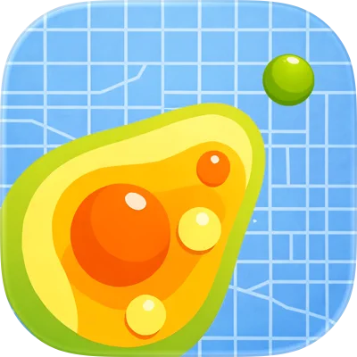

controlQ
划词翻译
选中任意应用里的文字，直接查看译文。
The best tools feel invisible. They stay out of your way until the exact moment you need them.
最好的工具仿佛隐形。它们不会打扰你，只在你真正需要的那一刻出现。
快捷键
选中任意应用里的文字，直接查看译文。
框住图片、视频或不可选文字，OCR 后翻译。
只提取屏幕文字，自动复制到剪贴板。
可在设置中更改快捷键。
系统能力，不绕远路
QoQ 由 SwiftUI 构建，翻译交给 macOS Translation，识别交给 Vision。没有第三方翻译服务，也没有要注册的账户。
在 GitHub 查看源代码 ↗翻译与 OCR 使用系统框架完成。
自动判断源语言，支持 19 种常用语言。
菜单栏常驻，SwiftUI 浮层轻巧即用。
简中、繁中、英文、日文与韩文。
准备好了吗？

开发者的其他 App